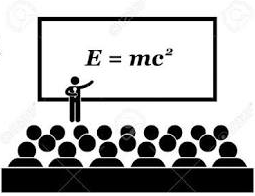

Academic Life
During our academic life in BSc in Engg(CSE), we have to study various courses,but many times we don't know why have to learn programming courses,algorithms,database etc. Sometimes we try to memorise programming codes to achieve a minimum CGPA,that ultimately brings no result & our academic life becomes more difficult to survive.
Here we will discuss about the whole engineering courses are studied by the CSE undergraduate students
around the whole world.Then we can differentiate between the academic engineering life and job life of an engineer.
These are quite differnent in terms and nature.What is learnt on academic life holds less importance on
practical uses of those.Suppose you have studied a whole chapter on mysql,but when you mind to implement it for
a client demand then you have to know a little bit about other related courses,such like jquery,html,php etc.
So we build this website for gathering knowledge beside the main courses to meet with the future job requirements.
For example of my thought,here I will give some website addresses of some renowed university,you can visit their website
and get proper idea about the undergraduate courses of CSE.
Computer Science and Engineering (CSE) < University of California.
Computer Science and Engineering (CSE) < University of California .
University of Washington - Seattle - Paul G. Allen School of Computer Science & Engineering.
University of Washington - Seattle - Paul G. Allen School of Computer Science & Engineering.
University of Hawaii at Hilo.
University of Hawaii at Hilo
University of Vermont.
University of Vermont
Hope, you have visited the links given above.Now you have get an idea of all courses that studied in
CS and CSE.
Now we consider the undergraduate courses taken in CSE at Bangladesh University of Engineering Technology(BUET).
By analysing their course list we will get a clear idea about the condition of our academic educational system of
CSE in various public and private university.
Course ID Course Title
CHEM113 Chemistry
CHEM114 Inorganic Quantitative Analysis
CSE100 Introduction to Computer Systems
CSE103 Discrete Mathematics
CSE105 Structured Programming Language
CSE106 Structured Programming Language Sessional
CSE107 Object Oriented Programming Language
CSE108 Object Oriented Programming Language Sessional
CSE201 Object Oriented Programming Language
CSE202 Object Oriented Programming Language Sessional
CSE203 Data Structures
CSE204 Data Structures Sessional
CSE205 Digital Logic Design
CSE206 Digital Logic Design Sessional
CSE207 Algorithms
CSE208 Algorithms Sessional
CSE209 Digital Electronics and Pulse Techniques
CSE210 Digital Electronics and Pulse Techniques
CSE211 Theory of Computation
CSE214 Assembly Language Programming
CSE215 Database
CSE216 Database Sessional
CSE218 Numerical Methods
CSE300 Technical Writing and Presentation
CSE301 Mathematical Analysis for Computer Science
CSE303 Database
CSE304 Database Sessional
CSE305 Computer Architecture
CSE307 Software Engineering and Information System Design
CSE308 Software Engineering and Information System Design Sessional
CSE309 Compiler
CSE310 Compiler Sessional
CSE311 Data Communication-I
CSE313 Operating System
CSE314 Operating System Sessional
CSE315 Microprocessors and Microcontrollers
CSE316 Microprocessors and Microcontrollers Sessional
CSE317 Numerical Methods
CSE321 Computer Networks
CSE322 Computer Networks Sessional
CSE324 Software Development
CSE400 Project and Thesis
CSE401 Artificial Intelligence
CSE402 Artificial Intelligence Sessional
CSE403 Digital System Design
CSE404 Digital System Design Sessional
CSE409 Computer Graphics
CSE410 Computer Graphics Sessional
CSE411 Simulation and Modeling
CSE421 Basic Graph Theory
CSE423 Fault Tolerant Systems
CSE433 Digital Image Processing
CSE435 Basic Multimedia Theory
CSE451 Data Communication-II
CSE452 Data Communication-II Sessional
CSE453 Wireless Networks
CSE454 Wireless Networks Sessional
CSE461 Algorithm Engineering
CSE462 Algorithm Engineering Sessional
CSE463 Computational Geometry
CSE464 Computational Geometry Sessional
CSE471 Machine Learning
CSE472 Machine Learning Sessional
CSE473 Pattern Recognition
CSE474 Pattern Recognition Sessional
CSE481 VLSI Design
CSE482 VLSI Design Sessional
CSE483 Computer Interfacing
CSE484 Computer Interfacing Sessional
EEE163 Introduction to Electrical Engineering
EEE164 Introduction to Electrical Engineering Sessional
EEE263 Electronic Devices and Circuits
EEE264 Electronic Devices and Circuits Sessional
EEE269 Electrical Drives and Instrumentation
EEE270 Electrical Drives and Instrumentation Sessional
HUM172 Developing English Skills Sessional
HUM183 English
HUM211 Sociology
HUM213 Government
HUM272 Developing English Skills Laboratory
HUM275 Economics
HUM371 Financial and Managerial Accounting
HUM411 Business Law
IPE493 Industrial Management
MATH141 Differential Calculus and Co-ordinate Geometry
MATH143 Integral Calculus, Ordinary and Partial Differential Equations,
and Series Solutions
MATH147 Ordinary Differential Equations (ODE), Partialy Differential Equations (PDE)
and Vector Calculus
MATH241 Complex Variable and Statistics
MATH243 Matrices, Vectors, Fourier Analysis, and Laplace Transforms
MATH247 Linear Algebra, Laplace Transformation and Fourier Analysis
ME160 Mechanical Engineering Drawing-I
ME165 Basic Mechanical Engineering
PHY102 Physics Sessional
PHY109 Physics (Heat and Thermodynamics, Structure of Matter, Waves and Oscillations,
and Physical Optics)
Now we see that there are many courses that are not used in our future job life but we have to study that courses for academic purposes like good result.For that sometimes many students put a less care on valuable courses.That would be harmful for our experimental future life.